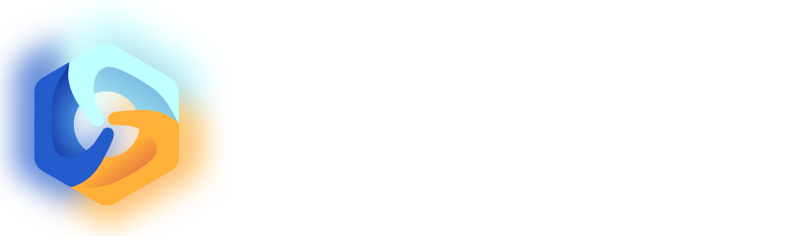

TechnologySistema de Gestión Jurídica hecho a la medida: todos los casos del consultorio, estén o no en la Rama Judicial, con alertas por Telegram y correo y un diseño accesible desde el celular.
Un proceso que se cae por inactividad no es solo un expediente archivado: es un usuario vulnerable sin respuesta, un estudiante que pierde la práctica y un consultorio que responde por ello.
Personas que acuden al consultorio porque no pueden pagar un abogado. Si el proceso termina por desistimiento tácito, se quedan sin la protección que vinieron a buscar.
Rota cada semestre, lleva varios casos y estudia al tiempo. Revisar la Rama a mano, uno por uno, es justo lo que se olvida en semana de parciales.
El consultorio responde por la calidad del servicio ante sus usuarios y ante quien lo vigila. Cada caso perdido por descuido pesa en su reputación.
Gráficas ilustrativas: la escala de la licencia depende del valor que hoy paga el consultorio.
Existe un primer desarrollo en producción, con la identidad del consultorio: consulta la Rama Judicial, sincroniza los expedientes y avisa por Telegram. La propuesta construye la plataforma completa alrededor de esa base.
Consulta automática del estado de cada proceso y de sus actuaciones, sin entrar a buscarlo.
Aviso de actuaciones nuevas e informe diario para quien sigue el caso.
Con la marca de Los Libertadores: los estudiantes la sienten como su herramienta.
La plataforma gestiona todos los casos del consultorio, también los que nunca llegan a un despacho, con un diseño accesible y portátil.
Estudiantes, docentes y directores viven en su teléfono. La plataforma se diseña primero para la pantalla pequeña: revisar un caso entre clases, recibir la alerta en el bus o supervisar el área desde cualquier lugar. Sin instalar nada: se abre en el navegador.
Celular, tableta o computador, con la misma cuenta y los mismos datos.
El estudiante que no tiene computador propio también puede llevar sus casos al día.
Una herramienta cómoda se usa; una incómoda se evita. La adopción es la mitad del éxito.
La plataforma no es solo para el estudiante. Potencia el trabajo de quienes supervisan: el docente asesor ve todos sus casos y estudiantes en una pantalla, y la dirección tiene la foto completa del consultorio.
La plataforma consulta cada radicado, detecta las actuaciones nuevas y mide el tiempo sin movimiento. Cuando un proceso se acerca al plazo de desistimiento tácito, avisa al estudiante y a su docente con tiempo para actuar.
Todos los casos de su área en una sola vista, filtrados por estudiante, estado y urgencia. Ve primero lo que se puede caer.
Verde, amarillo o rojo según la cercanía del vencimiento, con alertas escalonadas que suben del estudiante al docente.
Una buena experiencia de usuario no se adivina: se escucha. Antes de diseñar, recogemos propuestas de estudiantes, docentes y administrativos, y validamos cada pantalla con ellos.
Encuesta corta a estudiantes y docentes, y dos o tres sesiones de trabajo: qué les cuesta hoy, qué revisan primero, qué olvidan, desde qué dispositivo trabajan.
Bocetos navegables de las pantallas clave (panel, caso, alertas) para que los prueben en su propio celular antes de programar.
Recibimos observaciones al cierre de cada sprint y las incorporamos en el siguiente.
Lanzamiento con capacitación, manuales y un periodo de acompañamiento para resolver dudas.
Nada técnico: se trata de abrir los espacios para escuchar a los usuarios.
Sus casos, sus alertas y su agenda, sin ruido.
Supervisión de muchos casos y estudiantes a la vez.
Estadísticas del consultorio para informes y decisiones.
Entregables claros, revisión conjunta al cierre de cada etapa y comunicación directa durante todo el proyecto. Los tiempos pueden reducirse: ya existe un panel funcionando y una base de datos montada.
Un grupo con el enlace del consultorio para dudas y decisiones del día a día.
Al cierre de cada etapa se ve la plataforma funcionando, no un informe.
Cada sprint se recibe a satisfacción antes de pasar al siguiente.
El proyecto se cotiza por puntos de desarrollo: transparencia en el alcance y control claro del presupuesto. Cada punto equivale a ~COP $421.000.
Base de datos, entornos, estructura del proyecto, integración y despliegue continuos
Registro, ingreso, recuperación de contraseña y permisos para Admin, Director y Estudiante
Casos activos, usuarios, anotaciones, comunicaciones, alertas, próximos vencimientos y estadísticas
Creación y edición, asignación de docentes y estudiantes, área, estado procesal y documentos
Consulta automatizada del estado de cada proceso y detección de actuaciones nuevas. Ya desarrollada.
Telegram y correo: vencimientos, actuaciones nuevas y riesgo de desistimiento tácito
Indicador verde / amarillo / rojo según la cercanía del vencimiento; alertas escalonadas
Casos por área (civil, laboral, familia, penal) con filtros por estudiante, estado y urgencia
Asignación por semestre, registro de actuaciones y seguimiento del avance por director
Plantillas, historial por expediente y citaciones y notificaciones automáticas
Pasar de la herramienta actual a la plataforma propia sin perder un solo caso exige trabajo de las dos partes. Esto es lo que necesitamos del consultorio para asegurar una transición correcta.
Exportación de la herramienta actual con expedientes, partes, áreas y responsables. Lo que no se pueda exportar se carga manualmente.
Cada estudiante crea su propio usuario y se apersona de él. La universidad autoriza y valida cada registro, y asigna rol, área y casos.
Cada estudiante registra y verifica en la plataforma el radicado de sus procesos, y radica los nuevos desde su usuario. Así cada uno se apersona de sus casos.
La universidad registra las notas internas y el estado procesal de cada caso, para que nadie empiece de cero.
Con la copia .csv hacemos una carga parcial de la información existente y entregamos un reporte de lo que quedó cargado y lo que cada estudiante debe completar.
Sesiones de uso de la plataforma y configuración de Telegram en el celular de cada estudiante. La universidad convoca; Trifuerza capacita.
Cuando un estudiante termina su práctica, la universidad designa a quién pasan sus casos; la plataforma los traslada con todo su historial y retira el acceso del saliente.
Documentos para usuarios y estudiantes, que cada uno acepta al ingresar. Detalle en la página siguiente.
Puede requerirse participación estudiantil y trabajo manual de algunos funcionarios del consultorio. La migración automática depende del formato en que la herramienta actual entregue la información.
El consultorio maneja información sensible de personas vulnerables. La plataforma se entrega con sus reglas de juego escritas y con la seguridad pensada desde el diseño.
Para estudiantes, docentes y administrativos. Cada uno los acepta al primer ingreso.
Para los usuarios del consultorio y los estudiantes, conforme al régimen de protección de datos personales.
Trifuerza redacta los documentos con base en su experiencia jurídica; la oficina jurídica de la universidad los revisa y aprueba antes del lanzamiento.
La plataforma reduce drásticamente el riesgo de que un caso se olvide, pero no reemplaza el criterio ni la responsabilidad de quien lleva el proceso. Decirlo desde el principio protege a todos.
El monitoreo depende de fuentes externas: si el portal de la Rama Judicial está caído, cambia su estructura o publica tarde una actuación, la alerta puede retrasarse. La plataforma registra cada sincronización y muestra cuándo se hizo la última, para que nadie confíe a ciegas. Estudiantes y docentes deben seguir pendientes de sus procesos.
Después de los 3 meses de soporte incluidos, el consultorio puede contar con un plan de asistencia a bajo costo para atender fallas, ajustes por cambios en la Rama Judicial y dudas de uso. Si no lo necesita, no lo paga.
de soporte incluidos tras la entrega
la hora de la última sincronización en cada caso
la asistencia posterior, a bajo costo
Sin suscripción ni licencias por usuario: el consultorio es dueño del código y de los datos. Después de la entrega solo paga los servidores donde vive la plataforma.
Servidores y base de datos en la nube, a cargo del consultorio tras la entrega
Poderes, derechos de petición, demandas tipo y comunicaciones con campos autocompletados.
Cada usuario del consultorio consulta el estado de su proceso, sus audiencias y las comunicaciones recibidas.
Firma electrónica de poderes y comunicaciones con validez conforme a la Ley 527 de 1999.
App descargable desde las tiendas, con notificaciones directas al celular.
El consultorio puede integrarse a una app institucional que centralice todos los servicios de la universidad.
Lo que hoy se paga cada año en licencia queda libre para el consultorio, de por vida.
Desplegado y operativo para docentes y estudiantes desde el primer día.
Casos, estudiantes, términos y estadísticas del consultorio.
Monitoreo judicial y avisos por Telegram funcionando.
Documentado y propiedad de la universidad, para adaptarlo y escalarlo.
Términos y condiciones y política de tratamiento de datos.
Para estudiantes y docentes, con la configuración de Telegram.